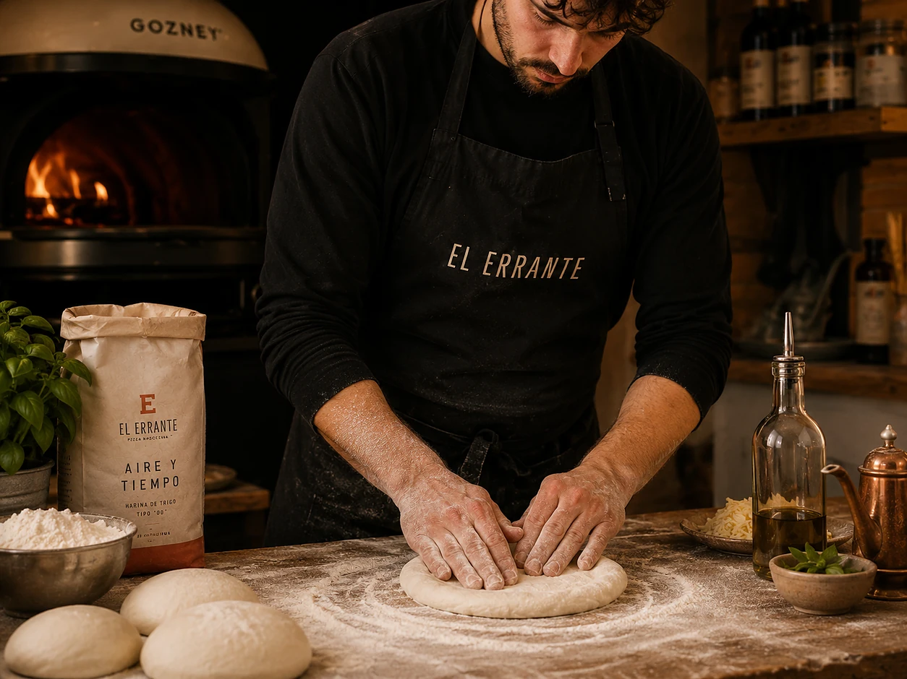

La masa es un ingrediente.
No busco el borde más espectacular; busco la estructura adecuada para la pizza que tiene que sostener.

Juan David Ocampo · Chef
Chef colombiano y director gastronómico de El Errante. Su trabajo alrededor de la pizza parte de una formación anterior en cocina profesional, alta cocina y vanguardia, y continúa en una investigación sobre masa, fermentación, fuego, producto y territorio.
Antes de la pizza
Juan David se formó en Gastronomía en La Colegiatura, en Medellín. Su recorrido profesional incluye experiencias en cocinas de alta cocina, vanguardia y autor, entre ellas El Cielo y Carmen.
Más allá de los nombres, lo importante es la disciplina que dejó ese recorrido: entender que un ingrediente también es humedad, temperatura, grasa, textura y secuencia; que una salsa puede ordenar una preparación o volverla confusa; y que una receta no mejora automáticamente porque tenga más elementos.
Cuando la pizza apareció después, esa forma de mirar ya estaba allí. Pocos ingredientes. Poco espacio para esconder una mala decisión. Masa, tomate, queso y fuego obligando a concentrar la cocina.
Italia como escuela
Viajar repetidamente a Italia, visitar pizzerías y comparar estilos transformó una fascinación en una búsqueda más sistemática.
La pregunta dejó de ser cuál pizza gustaba más. Empezó a ser por qué una masa se sentía distinta, qué hacía el fuego, cómo variaban tomate, queso, borde y centro, y por qué una receta de pocos elementos podía permanecer tanto tiempo en la memoria.
Viajar dejó de servir para regresar con recetas. Empezó a servir para regresar con mejores preguntas.
Volver a Colombia
Harinas, clima, productos, equipos y maneras de operar cambiaban. La respuesta ya no podía consistir únicamente en corregir esas diferencias hasta parecerse otra vez al origen.
La pregunta se volvió más fértil: ¿qué necesitamos comprender para tomar una decisión propia desde aquí?
Aprender bien una tradición debería producir criterio. No dependencia.
Lo que creo hoy
No son dogmas. Son las mejores formulaciones actuales de preguntas que todavía seguimos cocinando.
No busco el borde más espectacular; busco la estructura adecuada para la pizza que tiene que sostener.
El tiempo importa porque transforma. El reloj organiza; la masa confirma el estado.
Grasa, acidez, humedad, textura y aroma necesitan una relación, no una acumulación.
Un ingrediente local entra cuando hace mejor la receta, no cuando facilita una historia.
Documentar, repetir y transmitir criterio convierte un hallazgo en conocimiento.
Si la técnica es más interesante que el bocado, la pizza todavía necesita trabajo.
Investigación actual
El perfil de un cocinero debería mostrar también aquello que todavía no sabe.
Qué relación existe entre volumen, centro, masticabilidad y sensación de ligereza.
Cómo cambia mientras baja la temperatura y cómo diseñar deseo entre un bocado y otro.
Cómo formular una pizza que sabemos desde el inicio que tendrá dos momentos de cocción.
Cómo trabajar el hongo para concentrar sabor sin convertir el agua en el principal problema.
Cómo ordenar grasa, tostado, dulzor y acidez para que una pizza intensa conserve deseo.
Cómo convertir relaciones con productores en conocimiento gastronómico real.
Manifiesto
Quiero poder cambiar de opinión cuando cocinar demuestra algo mejor. Quiero seguir viajando, comiendo, comparando, visitando productores y aprendiendo de otros cocineros. Quiero que aquello que aprendamos modifique lo que hacemos, no solamente aquello que contamos.
El Errante sigue teniendo sentido precisamente porque no lo considero terminado. Hay masas que todavía no entendemos, productores que todavía no conocemos, ideas que tendremos que abandonar y preguntas que aún no sabemos formular correctamente.
Aprender del origen. Entender el producto. Cocinar desde aquí.